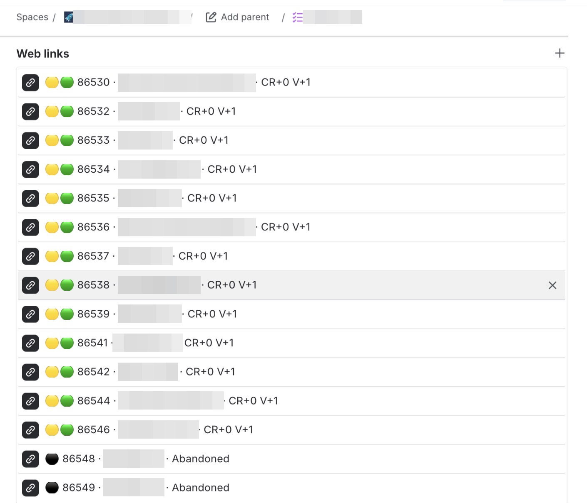

Why Not Both — and a Map While We're at It
All I wanted was to get one project running on my laptop. Seven weeks later I'd written a tool whose only job was to find the trapdoors, and I was running the same code in five copies at once just to keep the fights straight.
Our software runs on Java, the engine under a huge share of the world's business software. Ours was two long-term versions behind — old enough that the security patches had stopped coming. The sensible plan was simple: move one server to a newer Java, prove it runs, then do the rest. One green light.
The goalposts start walking
"Get it running locally" became "get it running on a real build server," a separate machine that proves the code works outside my laptop. Then the build server needed a fresh Docker image — a sealed lunchbox of the exact tools a machine needs, so every machine builds our code the same way. Then came Gradle, the tool that assembles our software from thousands of pieces. Every finish line moved. Then came the real wall: Jigsaw, Java's system for locking away private internals.
Old Java was a building with every room open — private offices, filing cabinets, all of it. Convenient, lawless. Newer Java put locks on the private rooms. Sensible, except our code, and half the free libraries it leans on, had been wandering into those rooms for years. The upgrade didn't break our software so much as change the locks on doors we'd forgotten we were using.
Run the upgraded code and the complaints started. One library reached for a back-office trick and hit a locked door. Another reached for a tool Java hadn't just locked away but demolished. That meant ripping out an old component and bolting in a newer one that spoke a slightly different language.
Java hands you keys. For each locked door you add a flag — a line that says "let this program in, I know what I'm doing." Fine, except the doors reveal themselves one crash at a time: run it, watch it fall over, cut a key, run it again.
So I built a locksmith
The turning point wasn't muscling through the doors. It was giving up on finding them by hand.
I wrote a little tool that reads every library we carry, plus our own code, hunts for anything picking a Java lock, and prints the exact list of keys. No more faceplanting into doors. I could see the floor plan up front.
The first version was one crash behind reality: it only found locks I'd already taught it to name. So I added a discover mode. It watched for any code touching a private door and flagged ones it had never seen. It stopped being a checklist and became a scout. By hand I'd have hunted for twelve keys; the scout flagged forty-two doors worth watching.
Underneath, the libraries were a line of dominoes. Upgrade the engine and the oldest library can't cope, so upgrade it. Its new version demands a newer third library. That changes a word our code used. A test breaks. One tempting shortcut would have cleared a whole cluster at once, but it dragged in Jakarta — an industry-wide javax-to-jakarta rename touching thousands of files. Too big to commit to blind, too tempting to ignore. So I didn't decide. I started a branch, a separate copy of the work, just to see where it landed, and kept it as one open fight.
Five fights at once, and a war diary
At that point one copy of the code wasn't enough. I checked out five copies side by side — one on the old Java, one mid-migration, one exploring the Jakarta rename — so I could run five fights in parallel instead of undoing one experiment to try the next.
I also kept a diary. Not prose, but lists any developer, or AI, could pick up cold: a step-by-step recipe to migrate one project; a learned-the-hard-way file of every wrong turn; and an open-questions file of the decisions still hanging, each with its trade-offs — the tempting Jakarta shortcut, and a database bug that only shows up on the newest Java.
No two projects were alike. The first were small: a few thousand lines, a quick climb. The last had seven smaller projects nested inside it, each with its own booby-traps. The recipe was never push-button. Every project bent it, and half the work was spotting where.
Then the honest test: I handed the guide to a colleague and asked them to migrate a project I'd never touched. It worked. The route reproduced on a machine that wasn't mine, for code I didn't write. It stopped being my heroics and became something the team owned.
Why not both
Then Claude shipped a new command — /goal — that takes one ambitious target and works backward from it. I'd been circling this same postponed job for weeks, and I thought: why be timid? The safe target was Java 21, a careful catch-up. The bold one was Java 25, the newest release — a bigger jump, more risk. Choosing felt like the wrong instinct. So I set both, and told it to keep the map current as it went.
Then I handed seven weeks of work to the AI. It ran the whole thing in a single afternoon.
Ten migrations side by side — five projects, two Java versions — each following the recipe and correcting the recipe as it learned. It even rebuilt the build image that had gone missing, and when the newest Java refused to run inside it, built a two-in-one image holding both.
The rule I gave it: never sit still. Get the safe Java green first, but the instant a build is running, start something else — overnight tests, code review, the newer path. Less like watching one worker, more like a chess player running twenty boards at once.
And I wasn't reading logs. I watched a scoreboard I'd built months ago for something else: a tool that pins each project's live status onto its ticket, one row each, with two coloured dots. Past-me had handed present-me the control panel.
One by one the test dots went green — both versions, all five projects. The review dots stayed yellow, waiting on a person. A couple of black dots marked the dead experiments. That's what losses look like on the board.
One warning made me grin: four tests failed, but only on the build server, never on my Mac. The reason was beautiful and stupid. My laptop's clock ticks in millionths of a second. The server's ticks in billionths. The database only remembers millionths. A check comparing "what time did this happen" quietly disagreed with itself — on the server only. The machine caught a bug my laptop was physically incapable of reproducing.
Then a second machine reviewed it before I did: a different AI, built by a rival company, reading every project through a little relay I'd rigged. Read it, judge it, report back. On the safe Java it signed off. On the newer one it refused to wave through a real problem — the same build-image mistake as before — and that got fixed. One company's AI did the work; a rival's caught something.
Then the last message landed: done. Every project migrated, each messy pile of experiments folded into one clean change that still passed every test.

All green/yellow — waiting for human review.
So what
And after all that, it ends on yellow. Every light a machine can turn is green; a rival machine has already read it over. But the final yes — the one that folds it into the real product — belongs to a colleague, and it's Saturday, so that's Monday. Maybe. The machines drove the whole thing to the door, wrapped and pre-inspected, and then did the one thing they're built to do there: they waited for a person.
I never did get "one project running on my laptop" and stop. What I shipped was something I hadn't set out to build: a route up the hill, a scout for the trapdoors, a diary of every fight — good enough that a colleague walked it without me, and a machine walked it ten times in an afternoon.
The upgrade was never the deliverable. The map was.